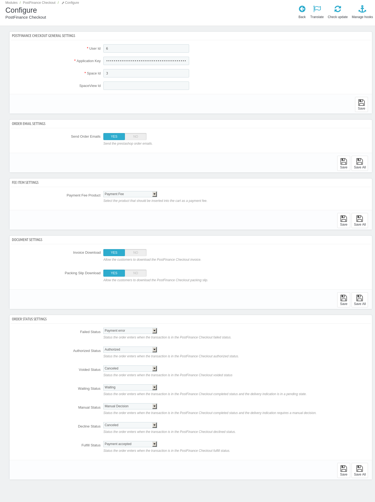

PostFinance Checkout PrestaShop
Documentation
1Prerequisites
If you don’t already have one, create a PostFinance Checkout account.
Install the PrestaShop Mailhook module found here.
2Installation
-
Download the module.
-
Login to the backend of your PrestsShop store.
-
Navigate to Modules and Services > Add a new module.
-
Select the file and click
Upload this module. -
Install the module in the shop.
-
3Configuration
-
Navigate to Modules > Modules and Services > Installed modules in your PrestaShop backend
-
Search for the PostFinance Checkout module, click on Configure and enter the PostFinance Checkout User ID, Space ID and the Application Key that you can create in the setup assistant. Alternatively, you can manually create an application user.
If your store is configured for multishop, you may use different spaces for each store to configure different behaviours.
-
Optionally disable downloading invoice and packing slip. These settings allow customers to download the documents from their order overview in the PrestaShop frontend.
-
After saving the configuration, the payment methods are created in the PrestaShop store and the necessary webhooks are set up.
The setup is now finished. You should see the payment methods in your checkout. To view the payment method configuration in the backend of PrestaShop go to Payment > PostFinance Checkout payment methods.
4Payment method configuration
4.1Setup
The PostFinance Checkout payment method configurations are synchronized automatically into the PrestaShop store. There are just a few payment method settings in the PrestaShop store in Payment > PostFinance Checkout payment methods.

Additional payment methods are directly added in PostFinance Checkout. This can be done in the setup assistant. Changes are synchronized automatically.
4.2Customization
If you want to change the payment method description, title, logo, etc you need to do this in the payment method configuration. Changes will be synchronized automatically.
5Payment fee
The module allows to configure a Payment Fee for the different PostFinance Checkout payment methods. This is done in multiple steps:
-
Create a PrestaShop product with price 0.00 and give it a meaning full name. e.g. "Payment Fee"
-
In the module configuration select this newly created item as the payment fee product.
-
Configure the fee for each method in the Payment > PostFinance Checkout Payment Methods section.
6State graph
The Payment Process of PostFinance Checkout is completely standardized for every payment method you can process. This gives you the ability to simply add a payment method or processor without changes inside of your PrestaShop configuration. An overview about the states and the payment processes of PostFinance Checkout can be found in the Payment Documentation.
In the following section we provide you an overview about how the PostFinance Checkout states are mapped into the PrestaShop State graph for orders and invoices.
6.1State mapping of PrestaShop orders
Below you find a diagram that shows the state machine of PrestaShop for orders including additional information for the state transitions.
-
When the transaction is marked as
authorizedin PostFinance Checkout the order within PrestaShop will be marked asAuthorized. The amount is only reserved at this point. The order is not yet ready to be fulfilled. -
When the transaction fails during the authorization process the PrestaShop order is marked as
Payment error. -
In case the delivery indication is pending, the order within PrestaShop will move into either
Waiting(The transaction is completed but the delivery indication is not yet decided e.g. The money still needs to be cleared by the customer bank. Status will automatically update later on) orManual Decision(in this case you have to decide the outcome of the delivery indication e.g. You have configured to manually check transactions without 3d Secure). See more details in On hold orders. -
In case the decision about the fulfillment is negative, the order within PrestaShop will be marked as
canceledand should not be fulfilled. -
If you decide to void an authorized transaction (in case for example the products ordered are no longer in stock), the order within PrestaShop will also be marked as
canceled. -
When the transaction is marked in PostFinance Checkout as
fulfillthe order within PrestaShop will be be marked asPayment accepted. This is when you can start the fulfillment process. The plugin will in this case not change the status anymore.
|
Note
|
This describes the default state machine of PrestaShop orders, however you have the option in the PostFinance Checkout plugin configuration to define different order status. |
For information about deferred completion, see Complete (capture) an order
7Transaction management
You can capture, cancel and refund transactions directly from within the PrestaShop backend. Please note if you refund, void or capture transactions inside PostFinance Checkout the events will not be synchronized into PrestaShop.
7.1Complete (capture) an order
You have the possibility for your transactions to have the payment only authorized after the order is placed. Inside the connector configuration you have the option, if the payment method supports it, to define whether the payment should be completed immediately or deferred.
In order to complete a transaction in PrestaShop, open the order and click on the completion button.
This will finalize the order and it can no longer be changed.
|
Note
|
When the completion is pending in PostFinance Checkout the order will stay in the authorized state. |
7.2Void a transaction
In order to void a transaction, open the order and click on the void button.
|
Note
|
You can only void transactions that are not yet completed. |
7.3Refund a transaction
You have the possibility to refund already completed transactions. In order to do so, open the captured order. By clicking on Partial refund the window for refunds will show. In case the payment method does not support refund, you will not see the possibility to issue online refunds.
You can make refunds based on product quantity and product amount. In order to do so, enter the number of products or amount you wish to refund to your customer.

You can carry out as many individual refunds as you wish until you have reached the quantity or amount of the original order.
|
Note
|
It can take some time until you see the refund in PrestaShop. Refunds will only be visible once they have been processed successfully. |
7.4On hold orders
As long as the delivery should not be done the state of the order will be in Manual Decision. This happens when the transaction in PostFinance Checkout has not reached the fulfill state.
There are essentially two reasons why this can happen:
-
The transaction is not completed. In this case you have to complete the transaction as written above.
-
As long as we are not able to tell you if you should fulfill the order. The delivery decision is done automatically. If this does not happen within the defined time frame, PostFinance Checkout will generate a manual task which you should observe and follow the instructions. When there is a manual task we will also display it in the PrestaShop Backend.
You can find more information about manual tasks in our Manual Task Documentation.
7.5Limitations of the synchronization between PostFinance Checkout and PrestaShop
Please note that captures, voids and refunds done in PostFinance Checkout are not synchronized. We therefore recommend that you perform the captures, voids and refunds always inside the PrestaShop backend and not inside PostFinance Checkout.
7.6Tokenization
In case the payment method supports tokenization you can store the payment details of your customer for future purchases.
In order to use this feature make sure that the One-Click-Payment Mode in your payment method configuration is set to allow or force storage.
|
Note
|
Tokenization is not available for guest checkouts. |
8Error logging
The module uses the default PrestaShop logging functions which are automatically active in your PrestaShop store. The module will log various unexpected errors or information which can help identify the cause of the error. You can find the logs in your PrestaShop backend in Advanced Paratmeters > Logs.
9FAQ
9.1How can I make the payment methods appear in the checkout?
Make sure that you followed the Configuration section by stating your PostFinance Checkout space ID and application user’s access information in the PrestaShop backend. By saving the configuration form the synchronization of the payment methods and the set up of the webhooks are initiated.
If this does not solve the problem, it could be that you use a special fee or coupon module that we do not support. Try to disable this plugin and see if it helps. The payment methods are only displayed if the plugin’s total calculation matches the actual order total.
9.2What happens in a PrestaShop transaction.
In the Prestashop standard environment an order is created by default, after a transaction has been successfully completed. In order to pass the order ID from Prestashop through to wallee, the order with a wallee payment-method is created before the transaction has been completed successfully. This order ID will then appear on the buyer’s bank statement - Furthermore it will also appear in the merchant’s payout report.
As a consequence all order attempts will be noted in the order list of Prestashop. Traceability: By having the failed order in the PrestaShop database, allows the merchant to directly see when a buyer tried multiple times in the backend of PrestaShop.
In the Prestashop standard environment an order is only created if the payment has been completed successfully - therefore, an email is sent to the customer, once an order is created. For this to work correctly with our PostFinance Checkout module, the mailhook plugin has to be installed - it will prevent the sending of an email once an order is created.
Order Confirmation Email: The email notification to the customer will only be sent, when an order/transaction actually succeeded. See: link:https://github.com/wallee-payment/prestashop-mailhook
10Support
If you need help, feel free to contact our support.